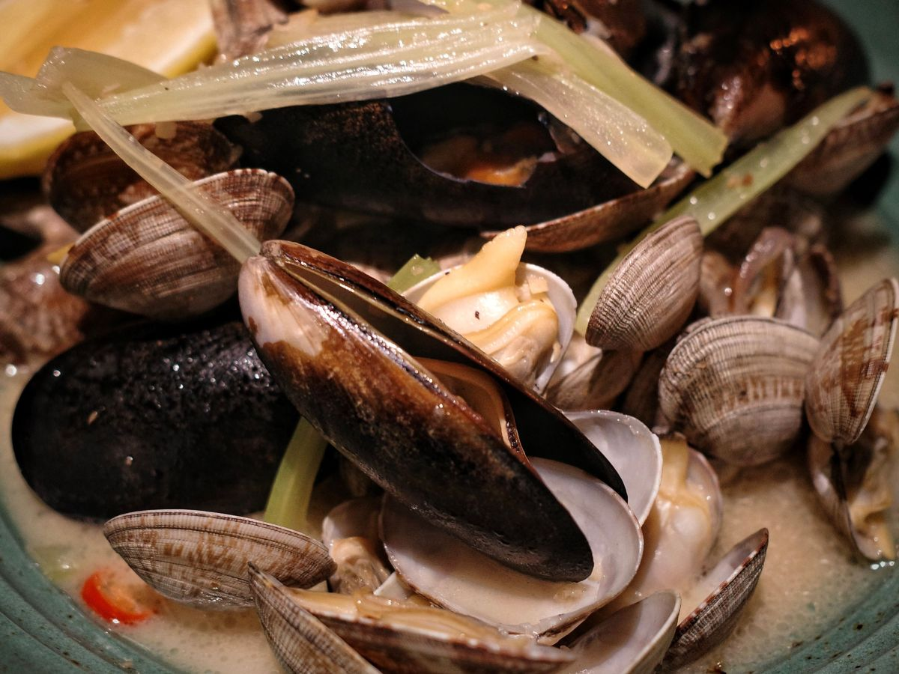
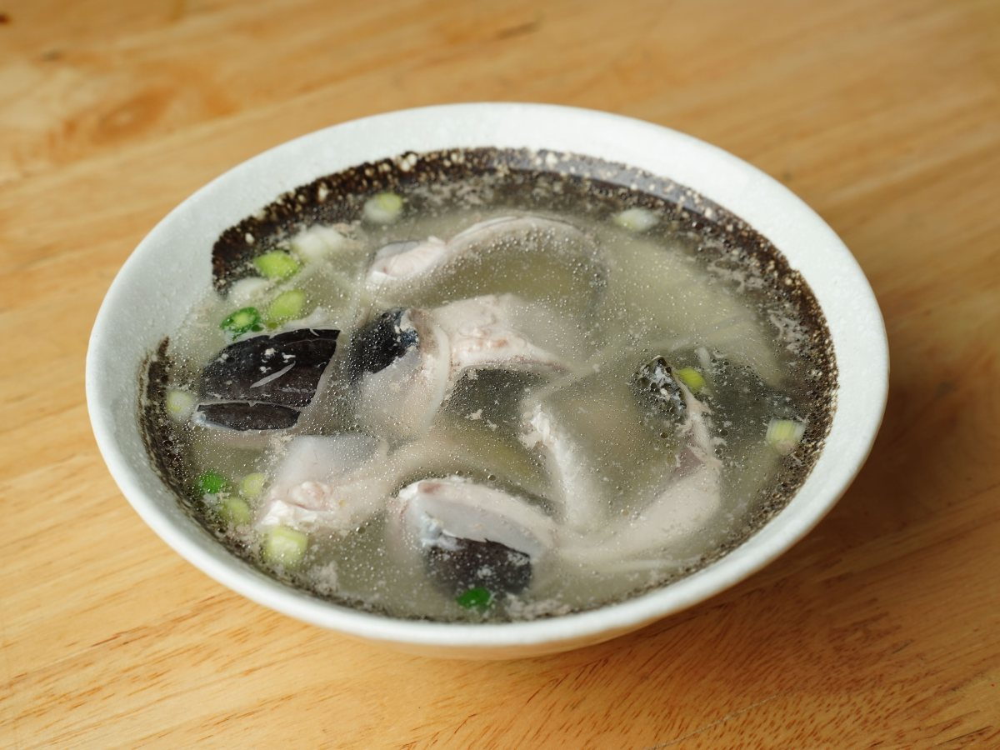
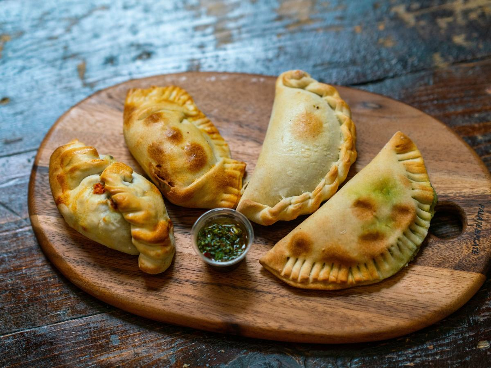
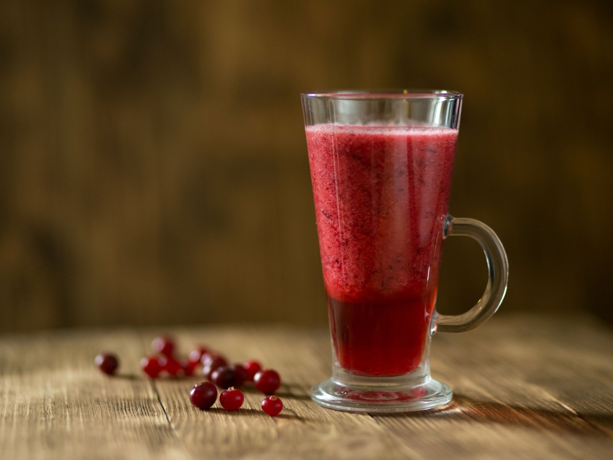
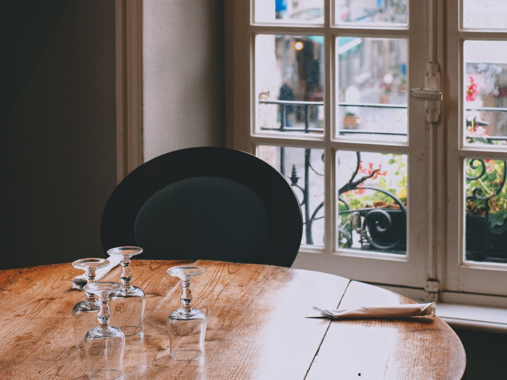
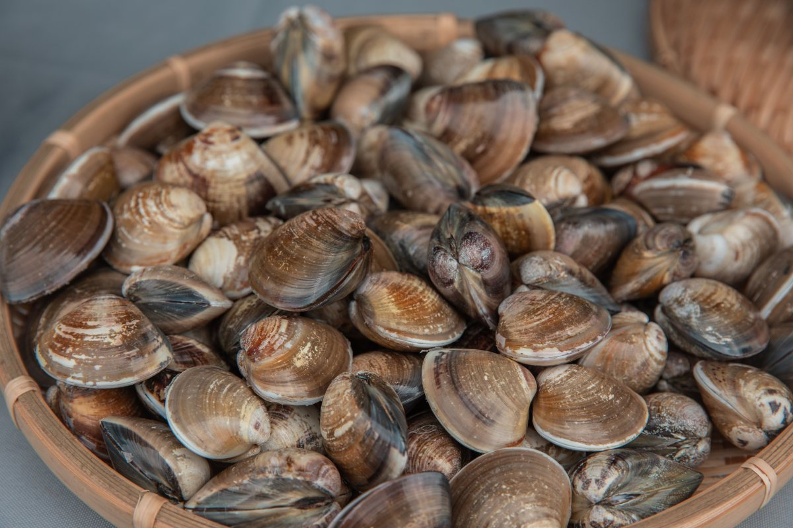
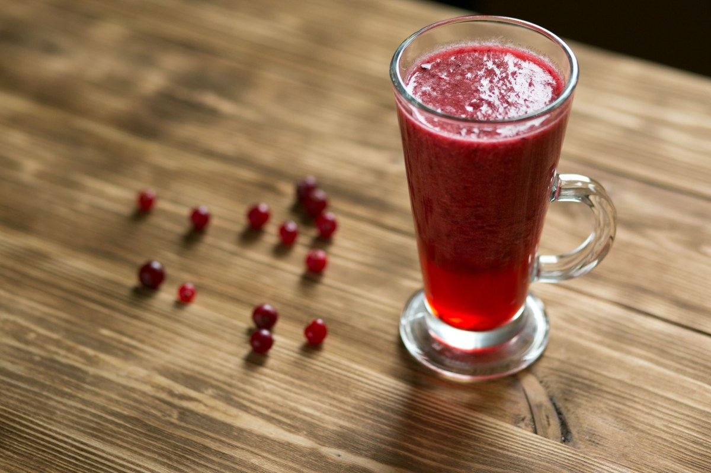
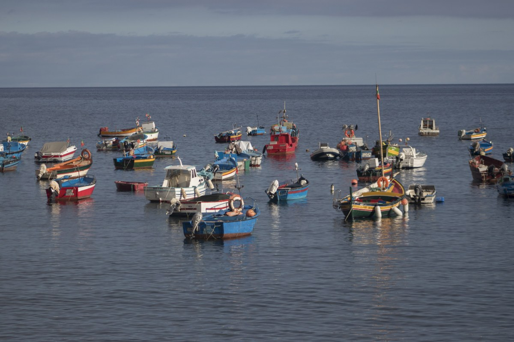
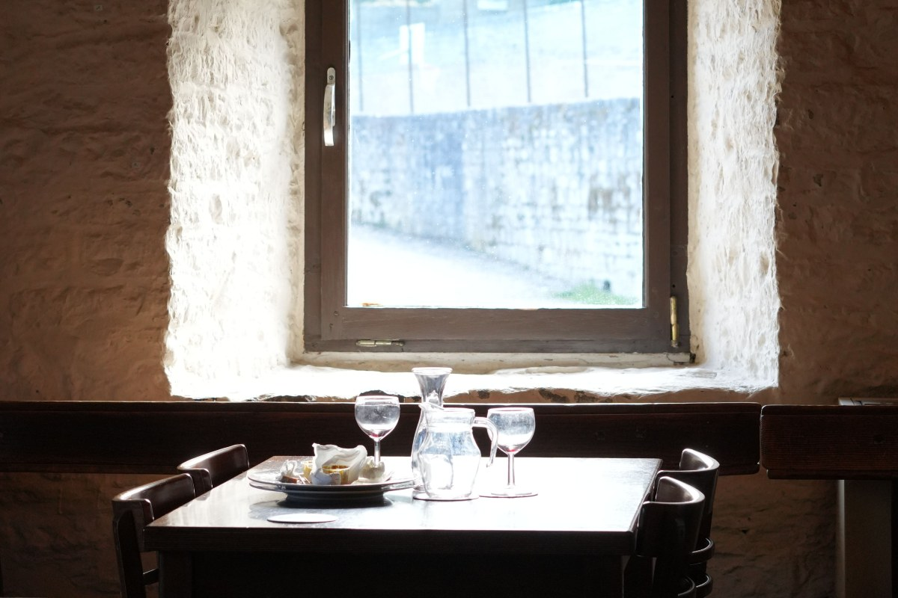
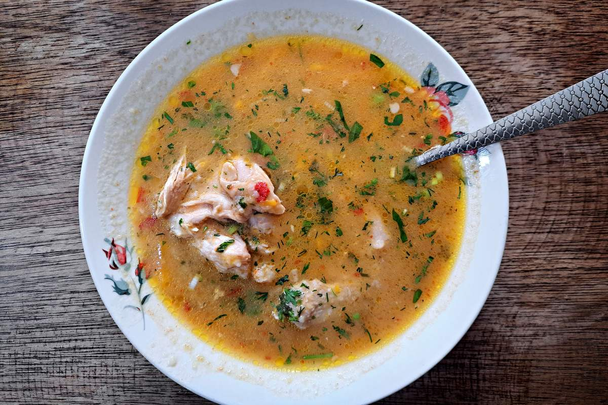

Corral · Condell 30
Se cruza la bahía para comer aquí.
Comida casera, pescados y mariscos en el puerto de Corral.
- 931reseñas en Google
- 4,6de nota promedio
- 30calle Condell, Corral
- 0páginas propias: no aparece en la web
La pregunta antes de salir de Valdivia
¿Cómo llego a Corral?
Corral queda del otro lado de la bahía: se llega por agua o por tierra.
- 01
En lancha
Cruzando desde Niebla.
- 02
En barcaza
Con el auto, desde Niebla.
- 03
Por el río
En los paseos que salen de Valdivia.
- 04
En auto
Por el camino de la costa sur.
Horarios y tarifas los informa cada operador.
Se baja de la lancha con hambre de mar.
Picada de puerto
Lo que llega a la mesa
-

Del día
Pescado frito
Con ensalada o papas.
-

De la bahía
Mariscos
Como se comen en el sur.
-

Para el frío
Caldillo
Caliente, en greda.
-

Para empezar
Empanadas
De mariscos o queso.
-

Hecho en casa
Jugo de berries
El que nombran las reseñas.
-

Como en casa
Comida casera
Abundante y a buen precio.
Comida casera, mariscos y jugo de berries salen de sus reseñas; el resto lo confirma la casa.
931 reseñas y un 4,6.
En un pueblo que se visita por el día
Bote, muelle y olla
Un almuerzo en Corral





Fotos de referencia: los platos de verdad los muestra la casa.
Dónde estamos
Condell 30, Corral
- Dirección
- Condell 30, Corral
- Teléfono
- (63) 232 0076
- Reseñas
- 931 en Google, nota 4,6
- Horario
- Falta el horario
Antes de cruzar, llame para confirmar que hay mesa.
Condell 30, Corral Abrir en Google Maps
Para el dueño
Qué es real y qué falta
Lo verificado
El nombre, la dirección, el teléfono, las 931 reseñas con 4,6 y lo que destacan: comida casera, mariscos y jugo de berries.
Lo de ejemplo
La carta en detalle y las fotos.
Lo que falta
El horario, un WhatsApp, la carta con precios y fotos propias.